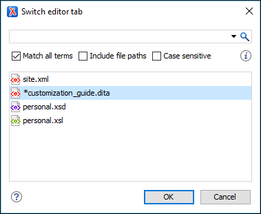

Configuring the Layout of the Views and Editors
All of the views available in Oxygen XML Author are dockable and there are various ways to configure and arrange the layout of the views and editing panes. You can also configure the layout of the toolbars.
To open a view, select it from the menu. You can hide a view by closing it with the button at the top-right corner of the view, or with the action.
Arranging the Layout
The changes you make to any layout are preserved between working sessions. The predefined layout files are saved in the preferences directory of Oxygen XML Author.
You can drag the editors and arrange them in any order, both horizontally and vertically.
The following image presents two editors arranged as horizontal tiles. To arrange them vertically, drag one of them on top of the other. In this example, the personal.xml file was dragged over the personal-schema.xml file. When doing this, a dark gray rectangle marks the rearranged layout.

Hide or Float Views
- Hide
- To gain more editing space in the Oxygen XML Author window, click
 Toggle
auto-hide in any view. This button sets the view in the auto-hide
state, making it visible only as a vertical tab, at the margins of the Oxygen XML Author window. To display a view in the auto-hide state, hover
its side-tab with your cursor, or click it to keep the view visible until you click
elsewhere.
Toggle
auto-hide in any view. This button sets the view in the auto-hide
state, making it visible only as a vertical tab, at the margins of the Oxygen XML Author window. To display a view in the auto-hide state, hover
its side-tab with your cursor, or click it to keep the view visible until you click
elsewhere. - Float
- A view can also be set to a floating state by using the
 Toggle
floating action, making it independent from the rest of the Oxygen XML Author window.
Toggle
floating action, making it independent from the rest of the Oxygen XML Author window.
Maximize the Editing Environment
You can configure the interface to maximize the editing area, leaving more vertical screen space available for the main editing pane. This is, for example, useful for presentations on low resolution screens or for laptops with small screen space. You can use the following two actions that are available in the Window menu to create a near full-screen editing environment:
- Maximize Editor Area
- If toggled on, all side views are minimized to give you more horizontal space in the editing pane.
- Hide All Toolbars
- If toggled on, all toolbar buttons are hidden to give you more vertical space in the interface.
Tile/Stack Editor Actions
- Tile Editors Horizontally
- Splits the editing area into horizontal tiles, one for each open file.
- Tile Editors Vertically
- Splits the editing area into vertical tiles, one for each open file.
 Stack
Editors
Stack
Editors- The reverse of the Tile Editors Horizontally/Vertically actions. Stacks all open editors.
 Synchronous Scrolling
Synchronous Scrolling- Select this action to scroll through the tiled editors at the same time.
Split Editor Actions
- Split Editor Horizontally - Splits the editor horizontally so that two editor panes are displayed with one on top of the other. This is useful for comparing and merging content between two documents.
- Split Editor Vertically - Splits the editor vertically so that two editor panes are displayed side by side. This is useful for comparing and merging content between two documents.
- Unsplit Editor - Removes a split action on the editing area.
Switch, Move, or Hide Editor Tabs
Each file that has been opened has a tab at the top of the editing pane and there are several ways to switch between tabs or move them, and you can even hide the tabs to only show the currently open file.
- Mouse and Scroll Wheel
- Of course, you can switch to a different editor tab by left-clicking the tab with your mouse, but when there are too many open tabs to fit on the screen, you can hover over the tab stripe and use the scroll wheel on your mouse to scroll to the left or right (same as using the two arrows on the far-right of the tab stripe).
- Buttons on the Far-Right of the Tab Stripe ()
- You can use the arrow buttons () on the right side of the tab stripe to scroll to the left or right and the Show List button opens a pop-up window that displays all the open file tabs and allows you to select and switch to a specific open file.
- Ctrl + Tab (Command + Tab on OS X) [NOTE: Ctrl + Page Down (Ctrl + Alt + Right Arrow on OS X) does the same]
- Switches to the next open tab in the order specified in the Order of switching between editor tabs option.
- Ctrl + Shift + Tab (Command + Shift + Tab on OS X) [NOTE: Ctrl + Page Up (Ctrl + Alt + Left Arrow on OS X) does the same]
- Switches to the previous open tab in the order specified in the Order of switching between editor tabs option.
- (Ctrl + F9 (Command + F9 on OS X))
-
This action opens a dialog box that allows you to switch to a particular editor tab by selecting it from a filterable list. This is especially helpful when you have a large amount of open file tabs and you want to switch to a certain tab this is not shown on the screen. It includes a search filter field and several options to help you find specific open file tabs.
Figure 2. Switch Editor Tab Dialog Box The Switch Editor Tab dialog box contains the following options and features:- Search Filter
- You can enter text in the filter field at the top of the dialog box to
filter the list and search for specific open files. You can enter any number
of terms, separated by space, and wildcards are allowed (for example,
*to match any sequence of characters, or?to match a single character). This field also has a history drop-down that allows you to select previously used search terms. - Match all terms
- If this option is selected, only the files that match all of your search terms will be displayed. If you use a wildcard in the search filter, this option is automatically disabled.
- Include file paths
- If this option is selected, the search is expanded to include file paths, and also the paths are displayed in this dialog box.
- Case sensitive
- If this option is selected, the search operation will be case-sensitive.
- List of Open File Tabs
- All files that are currently open are displayed in the main pane of the dialog box. Files that have been modified but not yet saved are prefixed by an asterisk. To switch to a particular file tab, double-click the file or select it and click OK.
- Mouse Drag
- You can use your mouse to drag editor tabs to a new location on the tab stripe.
- Ctrl + Alt + Comma
- Moves the current file tab one position to the left.
- Ctrl + Alt + Period
- Moves the current file tab one position to the right.
If you want to hide all the file tabs and only show the currently open file, select Hide editor tabs from the Window menu. This does not close the other tabs, just hides them. You can still navigate between tabs using keyboard shortcuts (Ctrl + Tab, Ctrl + Shift + Tab, Ctrl + F6, Ctrl + Shift + F6) or by selecting Next editor or Previous editor from the Window menu.
For more information about configuring the interface of Oxygen XML Author, watch our video demonstration: